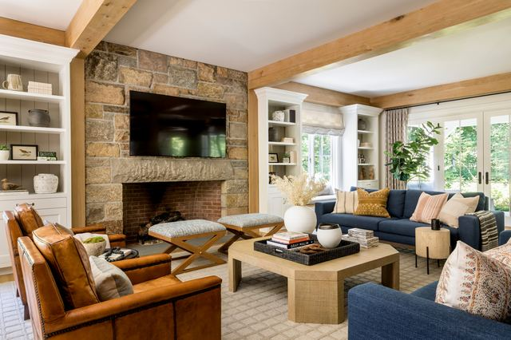
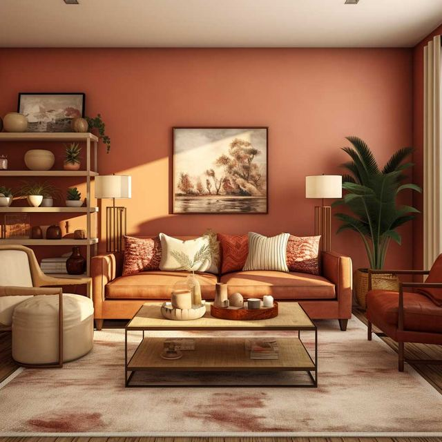

Nog op zoek naar je stijl?
Ontdek je stijl met kamers en kaartjes
Kies één tot drie kamers die je aanspreken en swipe daarna door een paar meubels. Capy vertelt je welke stijl bij je past.
8 kaartjes · ongeveer 1 minuut